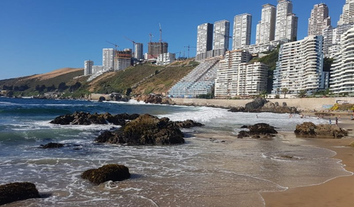

A Playa Reñaca é uma das praias mais conhecidas e visitadas de Viña del Mar. Ela é uma praia de ondas altas e fortes, o que atrai surfistas de todo o mundo, além de ser um lugar popular para praticar outros esportes marítimos como windsurf e stand-up paddle. Essa é considerada uma das melhores praias do país e um lugar imperdível para quem está visitando a região.
